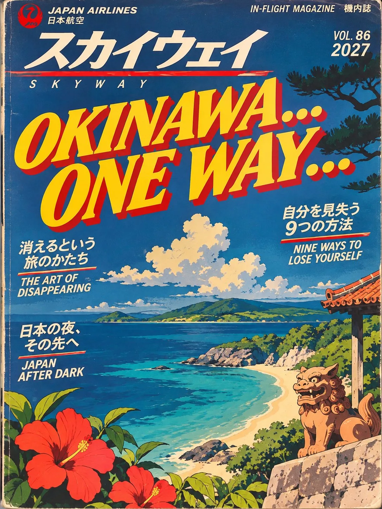

片道航空
The in-flight magazine of LAY-L · مجلة رحلة LAY-L

The in-flight magazine of LAY-L · مجلة رحلة LAY-L
Contents · المحتويات · 目次
Destinations · الوجهات · 目的地
01 One Missed Call.. Two…Modern Japanese Hip-Hop · Club Rapمكالمة فائتة… اثنتان…02
One Missed Call.. Two…Modern Japanese Hip-Hop · Club Rapمكالمة فائتة… اثنتان…02 SakuraLate-90s Alt R&B · Neo-Soul · Boom-Bapساكورا03
SakuraLate-90s Alt R&B · Neo-Soul · Boom-Bapساكورا03 Lost in Japan90s Gospel-R&B · Y2K Alt Popتائهة في اليابان04
Lost in Japan90s Gospel-R&B · Y2K Alt Popتائهة في اليابان04 Why Would I?1970s Japanese City Pop · Disco · Soul-Funkولماذا قد أفعل؟05
Why Would I?1970s Japanese City Pop · Disco · Soul-Funkولماذا قد أفعل؟05 The Voice at Platform Two1970s Enka · Kayōkyoku · Cinematic Balladالصوت عند المنصّة الثانية06
The Voice at Platform Two1970s Enka · Kayōkyoku · Cinematic Balladالصوت عند المنصّة الثانية06 Plastic Flower1960s Japanese Garage Rock · Surf · Rockabillyزهرة بلاستيكية07
Plastic Flower1960s Japanese Garage Rock · Surf · Rockabillyزهرة بلاستيكية07 ASMR StimulationDark Electro-Funk · Alt R&B · Trip-Hopتحفيز ASMR08
ASMR StimulationDark Electro-Funk · Alt R&B · Trip-Hopتحفيز ASMR08 The Wind Called In SickJapanese Romantic Waltz · Cinematic Chamber Popالريح أخذت إجازة مرضية09
The Wind Called In SickJapanese Romantic Waltz · Cinematic Chamber Popالريح أخذت إجازة مرضية09 Tamagotchi Luv ★Dark R&B · Alt R&Bحبّ التاماغوتشي
Tamagotchi Luv ★Dark R&B · Alt R&Bحبّ التاماغوتشيWelcome aboard · مرحبًا بكم · ようこそ
Okinawa… One Way… is a journey through Japan as seen through film, music and pop culture. Here’s how to travel it.
This isn’t an album trying to sound “traditionally Japanese”. It’s Japan as most of us actually meet it: through films, records, anime, toys and late-night internet rabbit holes.
ليس ألبومًا يحاول أن يبدو «يابانيًّا تقليديًّا»، بل اليابان كما يلتقيها معظمنا فعلًا: عبر الأفلام والأسطوانات والأنمي والألعاب وجولات الإنترنت في آخر الليل.
Each song is the soundtrack to a film that doesn’t exist. Different stories, different eras, one shared cinematic universe.
كلّ أغنية موسيقى تصويرية لفيلمٍ غير موجود. قصصٌ مختلفة، وعصورٌ مختلفة، وعالمٌ سينمائيّ واحد.
The narrators grieve what nobody else would: a recorded voice, a plastic flower, a half-heard song. The absurd is treated with complete sincerity.
يحزن الرواة على ما لا يحزن عليه أحد: صوتٌ مسجَّل، وزهرةٌ بلاستيكية، وأغنيةٌ نصفُ مسموعة. ويُعامَل العبثيّ بصدقٍ كامل.
The one-way ticket is permission to travel from 1960s garage rock to a Ghibli waltz without ever explaining yourself, and without going back.
تذكرة الذهاب فقط إذنٌ بالسفر من روك الستينيات إلى فالس جيبلي دون تبريرٍ ودون عودة.
— LAY-L

Feature · مقال · 特集
In Quentin Tarantino’s Kill Bill: Vol. 1, The Bride walks up to an airline counter and asks for a one-way ticket to Okinawa. She isn’t planning to come back the same person. LAY-L borrowed that moment for the album’s title: a tribute to cinema, and a statement of direction. A one-way ticket means no return trip to a single sound. Every song is a new destination, with its own decade, genre and story.
في فيلم «Kill Bill: Vol. 1» لكوينتن تارانتينو، تتقدّم «العروس» إلى مكتب طيران وتطلب تذكرة ذهابٍ فقط إلى أوكيناوا. لا تنوي أن تعود الشخصَ نفسه. استعارت LAY-L تلك اللحظة عنوانًا للألبوم: تحيّةً للسينما، وإعلانًا عن الاتجاه. تذكرة الذهاب فقط تعني ألّا عودة إلى صوتٍ واحد. كلّ أغنية وجهةٌ جديدة، بعقدها ونوعها وقصّتها.
THE KILL BILL THREADKill Bill runs through the whole record: the title comes from it, Shura no Hana (track 05) plays in it, and The 5.6.7.8’s (track 06) perform in it.
يمتدّ «Kill Bill» عبر الألبوم كلّه: منه جاء العنوان، وفيه تُسمَع «Shura no Hana» (الأغنية 05)، وفيه تعزف فرقة «The 5.6.7.8’s» (الأغنية 06).
Route map · خريطة الرحلة · 路線図
Each song departs from a different moment in Japanese music, cinema and pop culture.
In-flight entertainment · الترفيه · 機内エンターテインメント
One Missed Call.. Two…مكالمة فائتة… اثنتان…Modern Japanese Hip-Hop · Club Rap · Instrumental · CinematicCH02SakuraساكوراLate-90s Alt R&B · Neo-Soul · Boom-Bap · Lyrical · CulturalCH03Lost in Japanتائهة في اليابان90s Gospel-R&B · Y2K Alt Pop · Geographic · InstrumentalCH04Why Would I?ولماذا قد أفعل؟1970s Japanese City Pop · Disco · Soul-Funk · MusicalCH05The Voice at Platform Twoالصوت عند المنصّة الثانية1970s Enka · Kayōkyoku · Cinematic Ballad · Cinematic · MusicalCH06Plastic Flowerزهرة بلاستيكية1960s Japanese Garage Rock · Surf · Rockabilly · Musical · CinematicCH07ASMR Stimulationتحفيز ASMRDark Electro-Funk · Alt R&B · Trip-Hop · Cultural · Listening experienceCH08The Wind Called In Sickالريح أخذت إجازة مرضيةJapanese Romantic Waltz · Cinematic Chamber Pop · Cinematic · MusicalCH09Tamagotchi Luv ★حبّ التاماغوتشيDark R&B · Alt R&B · Pop culture
★ BONUS TRACK · أغنية إضافية · ボーナストラック


The story · القصة · ストーリー
Tick-tock, running late
You still don’t know how to play the game
チクタク、遅刻だね
まだゲームのやり方もわからないの
تك-توك، تأخّرت
وما زلتَ لا تعرف كيف تلعب اللعبة
Someone keeps calling, convinced persistence will earn a reply. It won’t. As the missed calls pile up, a would-be confrontation turns into a gleeful display of indifference: the joy of refusing to take part in someone else’s drama.
شخصٌ ما يواصل الاتصال، مقتنعًا بأن الإلحاح سيجلب ردًّا. لن يحدث. ومع تراكم المكالمات الفائتة، تتحوّل المواجهة المحتملة إلى استعراضٍ مرحٍ للامبالاة، ومتعةِ رفض المشاركة في دراما الآخرين.
Traditional Japanese instrumentation meets modern hip-hop: a three-note shamisen riff becomes the hook of a bass-heavy club track. The title also echoes Takashi Miike’s 2003 J-horror One Missed Call (着信アリ), where a ringing phone is the threat.
تلتقي الآلات اليابانية التقليدية بالهيب هوب الحديث: ريف شاميسن من ثلاث نغمات يصبح لازمةَ أغنية نوادٍ ثقيلة الباص. ويذكّر العنوان أيضًا بفيلم الرعب الياباني «One Missed Call» عام 2003 لتاكاشي مييكه، حيث يكون رنين الهاتف هو الخطر.
THEME · INDIFFERENCE, BOUNDARIES AND THE POWER OF SILENCE · 無関心、境界線、沈黙の力

The story · القصة · ストーリー
Cold rice and tempura
You were talking through the morning
冷めたご飯と天ぷら
朝まで話し続けたあなた
رزٌّ باردٌ وتمبورا
وأنتَ تتكلّم حتى الصباح
Someone keeps turning up, making themselves at home, then leaving without a word. She knows they’re unreliable, yet what she misses isn’t the relationship. It’s the small things: sitting on the floor, cold rice and tempura, talking about nothing until morning.
شخصٌ يظهر مرّةً بعد أخرى، يتصرّف وكأنه في بيته، ثم يرحل بلا كلمة. تعرف أنه لا يُعتمَد عليه، لكن ما تفتقده ليس العلاقة، بل التفاصيل الصغيرة: الجلوس على الأرض، رزٌّ بارد وتمبورا، والحديث عن لا شيء حتى الصباح.
Sakura (桜) means cherry blossom, Japan’s most recognisable symbol, and the lyrics are full of everyday Japan: cold rice, tempura, sitting on the floor. The production is American late-90s neo-soul, so the link is lyrical and cultural rather than musical.
«ساكورا» (桜) تعني زهر الكرز، أشهر رموز اليابان، والكلمات مليئة باليابان اليومية: رزٌّ بارد، وتمبورا، والجلوس على الأرض. أمّا الإنتاج فنيو-سول أمريكي من أواخر التسعينيات، لذا فالصلة لغويّة وثقافيّة أكثر منها موسيقيّة.
THEME · TEMPORARY INTIMACY AND NOSTALGIA FOR ORDINARY MOMENTS · 束の間の親密さと、ありふれた瞬間への郷愁


The story · القصة · ストーリー
Funny how a city you’ve never seen
Can feel familiar on the first night
不思議ね、見たこともない街が
最初の夜から懐かしいなんて
غريبٌ كيف لمدينةٍ لم ترَها من قبل
أن تبدو مألوفةً منذ الليلة الأولى
A trip through Japan turns unexpectedly emotional. Matcha from a vending machine, the wrong train, a paper fortune carried off by the breeze: every new detail brings back someone who isn’t there. Hushed verses burst into huge gospel choruses.
رحلةٌ عبر اليابان تصبح عاطفيةً على نحوٍ غير متوقَّع. ماتشا من آلة بيع، وقطارٌ خاطئ، وورقةُ حظٍّ يحملها النسيم بعيدًا، وكلُّ تفصيلٍ جديد يستحضر شخصًا غائبًا. مقاطع هامسة تنفجر في جوقات غوسبل هائلة.
The album’s most geographically explicit song: train stations, vending-machine matcha, getting lost in Shibuya, a paper fortune from a stand. A shamisen harmonises beneath the gospel choir, and that clash is the song’s identity.
أكثر أغاني الألبوم ارتباطًا بالمكان: محطّات القطار، وماتشا آلات البيع، والضياع في شيبويا، وورقة حظٍّ من كشك صغير. شاميسن يتناغم تحت جوقة الغوسبل، وهذا التضادّ هو هوية الأغنية.
THEME · TRAVEL, AND FAMILIAR FEELINGS IN UNFAMILIAR PLACES · 旅と、見知らぬ場所で出会う懐かしい感情

The story · القصة · ストーリー
There’s a little difference
Between what I can and what I choose
ちょっとした違いがあるの
「できること」と「選ぶこと」の間には
ثمّة فرقٌ صغير
بين ما أستطيعه وما أختاره
She could fix it. She could compromise, try again, make it work. Instead she asks a simpler question: why would I? No confrontation and no tears, just a disco groove and the easy confidence of choosing not to.
تستطيع إصلاح الأمر، والتنازل، والمحاولة من جديد. لكنها تطرح سؤالًا أبسط: ولماذا قد أفعل؟ لا مواجهة ولا دموع، بل إيقاعُ ديسكو وثقةٌ هادئة في اختيار ألّا تفعل.
Built on the golden age of Japanese city pop, the sleek urban pop of the late 70s and 80s. Its reference point is Miki Matsubara’s 1979 Mayonaka no Door (Stay With Me), which found a huge new global audience decades later.
مبنيّة على العصر الذهبي لموسيقى «سيتي بوب» اليابانية، البوب الحضري الأنيق في أواخر السبعينيات والثمانينيات. مرجعها أغنية ميكي ماتسوبارا «Mayonaka no Door» عام 1979، التي وجدت جمهورًا عالميًّا جديدًا بعد عقود.
THEME · SELF-RESPECT AND PERSONAL CHOICE · 自尊心と、自分で選ぶこと


The story · القصة · ストーリー
I watched a woman disappear
Who’d never lived at all
消えていく女を見た
一度も生きていなかった女を
شاهدتُ امرأةً تختفي
امرأةً لم تكن موجودةً أصلًا
Every morning the same recorded voice asks passengers to stand behind the yellow line. One Tuesday it’s replaced. The trains still run on time and nobody notices, except her. A routine software update becomes a quiet, genuine tragedy.
كلَّ صباح، يطلب الصوتُ المسجَّل نفسُه من الركّاب الوقوفَ خلف الخطّ الأصفر. وذات ثلاثاء، يُستبدَل. تبقى القطارات في مواعيدها ولا يلاحظ أحد، إلّاها. تحديثٌ تقنيٌّ عاديّ يصبح مأساةً هادئةً وحقيقية.
Directly inspired by Meiko Kaji’s Shura no Hana, the theme of the 1973 film Lady Snowblood, which Tarantino later used in Kill Bill: Vol. 1. It recreates the restrained, melancholic elegance of enka and kayōkyoku.
مستوحاة مباشرةً من أغنية ميكو كاجي «Shura no Hana»، أغنيةِ فيلم «Lady Snowblood» عام 1973، التي استخدمها تارانتينو لاحقًا في «Kill Bill: Vol. 1». وتستعيد الأناقة الحزينة المتحفّظة لموسيقى الإنكا والكايوكيوكو.
THEME · ATTACHMENT TO THE FAMILIAR, AND UNEXPECTED GRIEF · 慣れ親しんだものへの愛着と、思いがけない喪失


The story · القصة · ストーリー
Who gave you permission to die?
You weren’t even alive!
誰が死んでいいって言ったの？
生きてもいなかったくせに！
من أذِن لكِ أن تموتي؟
لم تكوني حيّةً أصلًا!
A waitress throws away her favourite fake rose. Everyone says it’s replaceable; it was never alive. She buys an identical one, but it stands up much too straight. A trivial loss blown up into a shouted, fuzz-drenched catastrophe.
نادلةٌ ترمي وردتها البلاستيكية المفضّلة. الجميع يقول إنها قابلةٌ للاستبدال، فهي لم تكن حيّةً أصلًا. تشتري واحدةً مطابقة، لكنها تقف مستقيمةً أكثر من اللازم. خسارةٌ تافهة تتضخّم إلى كارثةٍ صاخبة.
Inspired by The 5.6.7.8’s, the Tokyo garage-rock band who perform in Kill Bill: Vol. 1. Their sound reinterprets 50s and 60s American rockabilly and surf through Japan’s underground rock scene.
مستوحاة من فرقة «The 5.6.7.8’s»، فرقة الروك من طوكيو التي تعزف في «Kill Bill: Vol. 1». يعيد صوتها تفسير روكابيلي وسيرف الخمسينيات والستينيات الأمريكي عبر مشهد الروك الياباني المستقلّ.
THEME · THE VALUE OF “WORTHLESS” THINGS · 「価値のないもの」の価値


The story · القصة · ストーリー
Don’t get to the point
I prefer the scenic route
本題に入らないで
遠回りのほうが好きなの
لا تدخل في صُلب الموضوع
أفضّل الطريق الأطول والأجمل
An ordinary conversation becomes a seduction. Pauses, breaths, pronunciation and polite bureaucratic phrases take on double meanings, and the whole game is in the waiting. Clicks, whispers and binaural stereo make the sound itself the object of desire.
محادثةٌ عادية تتحوّل إلى إغواء. الوقفات والأنفاس والنطق والعبارات الرسمية المهذّبة تكتسب معانيَ مزدوجة، واللعبة كلّها في الانتظار. نقراتٌ وهمساتٌ وصوتٌ مجسَّم تجعل الصوتَ نفسَه موضعَ الرغبة.
Japan has one of the world’s most developed ASMR cultures: mimikaki (耳かき) ear-cleaning recordings, binaural audio and “situation voice” performances. Here the Japanese influence isn’t in the instruments or melody, but in the listening experience itself.
تمتلك اليابان واحدةً من أكثر ثقافات الـASMR تطوّرًا في العالم: تسجيلات «ميميكاكي» لتنظيف الأذن، والصوت المجسَّم، وعروض «الصوت التمثيلي». التأثير الياباني هنا ليس في الآلات أو اللحن، بل في تجربة الاستماع نفسها.
THEME · AUDITORY PLEASURE AND THE SEDUCTION OF ANTICIPATION · 聴く快楽と、焦らしの誘惑


The story · القصة · ストーリー
It comes to me in pieces
And leaves before it ends
かけらになってやって来て
終わる前に去っていく
يأتيني على شكل قِطَع
ويرحل قبل أن ينتهي
One afternoon the wind simply stops. In the stillness, a woman sings from an upstairs window and never reaches the last line. The melody stays half-remembered until, walking home, she sings the ending wrong. A small waltz about memory and the beauty of unfinished things.
ذات ظهيرة، تتوقّف الريح ببساطة. في السكون، تغنّي امرأةٌ من نافذةٍ علوية ولا تصل أبدًا إلى السطر الأخير. يبقى اللحن نصفَ متذكَّر، حتى تغنّي نهايته خطأً في طريق العودة. فالسٌ صغير عن الذاكرة وجمال الأشياء غير المكتملة.
Inspired by Joe Hisaishi’s Merry-Go-Round of Life from Studio Ghibli’s Howl’s Moving Castle. It explores the romantic, melancholic side of Japanese film scoring: a European-style waltz with Hisaishi’s melodic sensibility.
مستوحاة من مقطوعة جو هيسايشي «Merry-Go-Round of Life» من فيلم استوديو جيبلي «قلعة هاول المتحرّكة». تستكشف الجانب الرومانسي الحزين من الموسيقى السينمائية اليابانية: فالسٌ أوروبيّ الطابع بحسّ هيسايشي اللحني.
THEME · MEMORY, IMPERMANENCE AND UNFINISHED THINGS · 記憶、無常、未完成の美


The story · القصة · ストーリー
You call it love but it’s luv with a u
You can’t call it love when it’s only you
それを愛と呼ぶけど、綴りがひとつ違う
あなただけなら、愛とは呼べない
تسمّيه حبًّا، لكنه حبٌّ ناقصُ حرف
لا يُسمّى حبًّا إن كنتَ وحدك فيه
Love as a virtual pet: fed when it’s convenient, ignored when it isn’t, kept alive at a distance. A 90s toy’s innocence against the control games of adult relationships, and the question of whether you care for someone or just like being needed.
الحبّ كحيوانٍ أليفٍ افتراضي: يُطعَم حين يكون ذلك مريحًا، ويُهمَل حين لا يكون، ويبقى حيًّا عن بُعد. براءةُ لعبةٍ من التسعينيات في مواجهة ألعاب السيطرة في علاقات الكبار، والسؤال: هل تهتمّ بشخصٍ ما، أم تحبّ فقط أن يحتاجك؟
Built on Tamagotchi, the virtual pet Bandai launched in Japan in November 1996, which had to be fed and cared for to stay alive. That 90s Japanese pop-culture icon becomes a metaphor for love and control.
مبنيّة على «تاماغوتشي»، الحيوان الأليف الافتراضي الذي أطلقته «بانداي» في اليابان في نوفمبر 1996، والذي يحتاج إلى إطعام ورعاية كي يبقى حيًّا. تتحوّل هذه الأيقونة اليابانية إلى استعارة للحبّ والسيطرة.
THEME · CONDITIONAL AFFECTION AND THE NEED TO BE NEEDED · 条件付きの愛情と、必要とされたい欲求